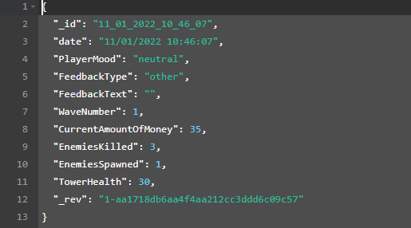

The grid is generated at runtime and be dynamically resized.
The helper class uses the simplest building blocks possible so any pattern is easily configurable.
{% highlight c# %}
public (int, int) North((int, int) x) { return ClampToGrid((x.Item1, x.Item2 + 1)); }
public (int, int) East((int, int) x) { return ClampToGrid((x.Item1 + 1, x.Item2)); }
public (int, int) South((int, int) x) { return ClampToGrid((x.Item1, x.Item2 - 1)); }
public (int, int) West((int, int) x) { return ClampToGrid((x.Item1 - 1, x.Item2)); }
public (int, int) NorthEast((int, int) x) { return ClampToGrid((x.Item1 + 1, x.Item2 + 1)); }
public (int, int) SouthEast((int, int) x) { return ClampToGrid((x.Item1 + 1, x.Item2 - 1)); }
public (int, int) SouthWest((int, int) x) { return ClampToGrid((x.Item1 - 1, x.Item2 - 1)); }
public (int, int) NorthWest((int, int) x) { return ClampToGrid((x.Item1 - 1, x.Item2 + 1)); }
{% endhighlight %}
You can see the code here
Feedback form

The feedback form is a tool allowing the player to send feedback.
In addition to data sent by the player, additional data is packaged and sent:
- - Data displayed to the player, like current amount of money, health etc.
- - Amount of enemies destroyed, time remaining before the end of each wave
All the data is formatted into JSON and stored in a database.
